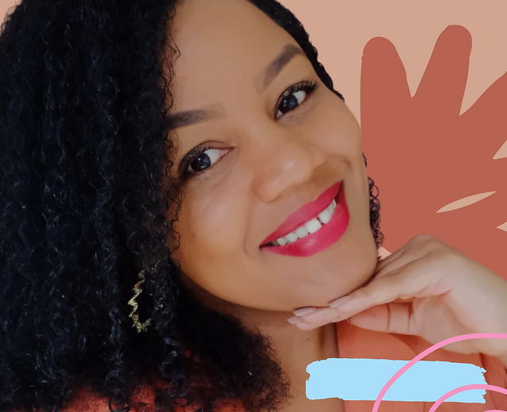

Tatiele de Souza Silva, é natural do Alto Santo Antônio,comunidade da cidade de Santo Antônio de Jesus,no Recôncavo baiano.Doutoranda em Artes Visuais pela Escola de Belas Artes da Universidade Federal do Recôncavo da Bahia. Mestre em Desenho, Cultura e Interatividade pela Universidade Estadual de Feira de Santana, Bacharela em Artes Visuais pela Universidade Federal do Recôncavo da Bahia e MBA em Design Thinking. A autora iniciou sua caminhada com a escrita com crônicas postadas no Facebook. Tempos depois,após fazer seu Mestrado, juntou crônicas que havia feito e publicou seu primeiro livro em 2017, o “Nota Afetiva: entre memórias, poesias e leituras crônicas".No mês seguinte já lançou sua segunda obra “Amores e Livores”, de poesia. Com esse feito, Tatiele em 2018 ganhou o Prêmio de Residência Artística Internacional para Escritores no Instituto Sacatar, e em 2019 foi contemplada com o Edital de Mobilidade Cultural da SECULT/BA com Intercâmbio Internacional no Centro Cultural Brasil-México.Também,recebeu o Prêmio Municipal Professora Cleuza de Oliveira na categoria literatura produzindo uma websérie de entrevistas com autoras locais em contexto de pandemia, e o Prêmio Estadual Jorge Portugal na categoria de publicação literária impressa para produzir o seu terceiro livro, “Travessia”. Atualmente, tem cinco livros publicados, e sua própria Produtora a BWE - Brasil Word Entertainment.
Nota Afetiva-Entre memórias, poesias e leituras crônicas
O Retorno de Saturno acontece a cada 29 anos na vida de uma pessoa. Para a astrologia, é quando ele, o planeta Saturno, completa uma volta inteira ao redor do sol. A gente bem que poderia chamar da crise dos 30, né? Dizem por aí que a cada retorno dessa nossa vida muda por completo. Algumas pessoas se casam, outras mudam de emprego, cidade, começam uma vida nova...Será? Em Travessia, esse é o tom. A personagem parte desse tempo-espaço para narrar as crônicas do que é ser mulher atravessando...
Que arte é essa, menina?
Que arte é essa, menina? Entoa o adulto que observa de algum canto do espaço, entusiasmado com a atividade peralta do menino. O artista mirim aprontou mais uma. O que será desta vez? Manteiga no rosto, cambalhota ladeira abaixo, voo do Batman, surf no corrimão da escada ou um quadro expressionista? Essa menina tem é arte. Diz a mãe encabulada com a maquiagem que a adolescente acabou de usar no rosto e das alegorias e artefatos com que se enfeitou. Vocês estão procurando é arte. Alerta a professora na escola enquanto os alunos elaboram uma atividade corporal mais restrita, pulando do alto, improvisando parkour nas dependências da escola. ” Em “Que Arte é essa, menina?” que tem lançamento previsto para o primeiro semestre de 2018. O livro aborda a Arte sobre uma ótica menos acadêmica e mais próxima do cotidiano, buscando aproximar o discurso da prática e está em fase de construção.
